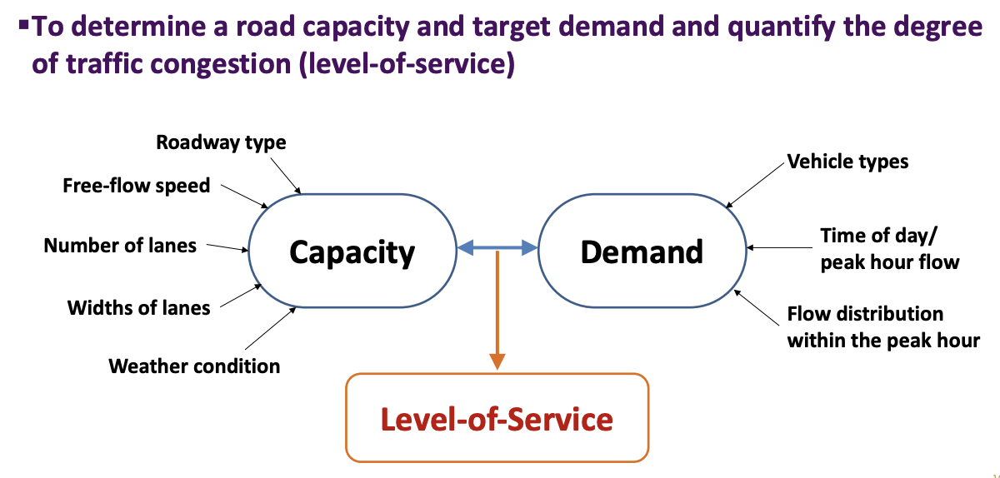

Civil 303
Transport Operations and Pavements
Introduction to Traffic Modelling
Dr Minh Kieu
Department of Civil and Environment Engineering, University of Auckland
These slides:
http://bit.ly/303-modelling
Auckland is transforming rapidly
Auckland’s city centre is going through a period of rapid transformational change, with substantial investment committed to the area by both the public sector and private developers.
City Rail Link starts operating in 2024: 54,000 peak-time passengers each hour
“By 2032 Auckland's city centre will be highly regarded internationally as a centre for business and learning, innovation, entertainment, culture and urban living - all with a distinctly 'Auckland' flavour.” - Auckland City Centre Masterplan
What can be made to improve the transport systems?
Congestion charging
Better public transport
More road infrastructure
Less congestion
Better environment
Fewer casualities
The prediction problem: How changes in traffic demand or supply make impacts on
Road users
Operators
Environment
Traffic safety
What is a traffic model?
A mathematical or digital representation of the physical traffic system over time and space
Why do we need traffic models?
What-if type of questions
Evaluate and fine-tune the transport policies
Forecasting
Traffic control
2 lectures & 1 tutorial
15% of the final exam
Numerical problem

Learning outcomes:
2. Understand traffic capacity and level-of-service
3. Apply the Highway Capacity Manual analysis for capacity and level-of-service

"All models are wrong, but some are useful" -- George Box
Classes of traffic models

Macroscopic models
Characteristic: Traffic flow is treated in an aggregate manner, similar to models of fluid dynamics using average flow, speed and density
describe the system entities, their activities and interactions at a low level of details
Requirement: Often aggregated traffic data, e.g. number of people who are travelling from one zone to another
Low computation cost
Applicable to large network
However, low details as well, so often suitable for long-term planning
Microscopic models
Modelling behaviours of individual vehicles in a traffic stream such as car-following and lane changing behaviour.
Characteristic: Describe both the system entities and their interactions at a high level of detail.
Describe the system entities, their activities and interactions at a high level of details
Potentially to be more accurate than macroscopic models, however this potential might not always be realized due to the complexity of their logic and the larger number of parameters that need to be calibrated
Microscopic models
High computation cost
Applicable to small road network (e.g. one to several intersections)
Suitable for both long and short-term planning
What do you think are the core components of a micro-simulation model?
Components of traffic microsimulation packages

Mesoscopic models
less computationally expensive to run, but more detailed than macroscopic models
Capable of modelling the traffic on the large scale
Characteristic: Individual vehicles may be presented but not as details as microscopic models
less computationally expensive to run, but more detailed than macroscopic models
Requirement: Often aggregated traffic data
Lower computation cost than microscopic but also less detailed
Applicable to large network
Suitable for both short and long-term planning
Exercise 1: What models to use in which case?
1. The Ministry of Transport wants a traffic model of Auckland to identify the bottlenecks in the traffic systems and come up with ways to reduce traffic congestions
2. Auckland Transport wants to evaluate the feasibility of replacing the traffic lights in one of our busy intersections with a roundabout
What model should we be using in which case, and what kind of data should we collect to model the system?
Agent-Based Models
Similar to microscopic models, but often model individual travellers with their activities instead of just vehicles
Example: The ABStreet Game on your web browser
http://play.abstreet.org/0.3.24/abstreet.html
Learning outcomes:
1. Understand the characteristics, requirements and suitability of each type of traffic models to solve specific traffic issues
2. Understand traffic capacity and level-of-service
3. Apply the Highway Capacity Manual analysis for capacity and level-of-service
What is 'Capacity'?
From dictionary: "the maximum amount that something can contain."
The capacity of a car park is the maximum number of parked cars. It can be measured relatively easily. However, the capacity of a particular section of road is not as easily determined as it depends upon the speed of the traffic and other factors.
Differences among Volume, Demand, and Capacity:

These are three different measures, although all are expressed in the same unit, veh/h
–Volume is “what is”.
The number of vehicles passing a point during a specified time period, usually expressed as hourly rate
-Demand is “what motorists would like to be”.
The number of vehicles that “desire to travel” past a point (the volume plus the vehicles who wish to pass the site but could not due to congestion)
Congestion occurs simply because Demand is higher than actual volume.
-Capacity is the physical limit of “what is possible”.
The maximum number of vehicles that can traverse a point (during an hour).
It is a characteristic of a roadway.

Under-Saturated Flow: When the demand (number of vehicles arrivals) is lower than the capacity of the section
Vehicles flow reasonably well and speed remains high. Traffic flow is stable and uncongested

Over-Saturated Flow: When the demand (number of vehicles arrivals) exceeds the capacity of the section
Flow breakdown occurs and a queue forms. Traffic flow is unstable and congested
Demand-to-Capacity Ratio (v/c ratio)
The ratio of the current or projected demand flow ($v$) to the capacity ($c$) of the facility
Used as a measure of the sufficiency of the existing or proposed capacity of the facility
Under-Saturated Flow: When the demand (number of vehicles arrivals) is lower than the capacity of the section
v/c ratio < 1
Over-Saturated Flow: When the demand (number of vehicles arrivals) exceeds the capacity of the section
v/c ratio > 1
Quality-of-service: The Level-of-Service concept
Level of Service (LOS) is a quantitative stratification of a performance measure or measures that represent quality of service.
The LOS concept facilitates the presentation of results, through the use of a familiar A (best) to F (worst) scale.
Roadways are not typically designed to provide LOS A conditions during peak periods, why?
LOS A and B

LOS C and D

LOS E and F
Exercise 2: Where do you think the Levels-of-service are located on our fundamental diagrams?
Learning outcomes:
1. Understand the characteristics, requirements and suitability of each type of traffic models to solve specific traffic issues
2. Understand traffic capacity and level-of-service
3. Apply the Highway Capacity Manual analysis for capacity and level-of-service
Highway Capacity Manual
The U.S. Highway Capacity Manual, or HCM, is the primary reference for traffic operational analysis in the United States, as well as many other countries.
The HCM is a collection of concepts and methods that guide analysts on how to evaluate a particular type of intersection or roadway segment, based on what can be extensive national or international datasets of operational performance.
Who will need Highway Capacity Manual ?
(a) engineers who work inthe field of traffic operations or highway geometric design and
(b) transportation planners who work inthe field of transportation system management.
How to access the Highway Capacity Manual 2016 (6th edition) ?
Introduction to the HCM
The first edition in 1950. It quantifies the concept of capacity for transportation facilities
Three types of highway capacity were defined:
Practical capacity - reasonable operating conditions
Possible capacity - maximum, under prevailing conditions
Ideal capacity - maximum, under ideal conditions.
The second edition in 1965, introduced the concept of level of service (LOS) as a means to quantify the operational quality provided by the highway/street to the drivers and passengers.

HCM 2010 (5th edition)
- Integrated multimodal approach is introduced to analyse and evaluate urban streets from the point of view of automobile drivers, transit passengers, bicyclists, and pedestrians. For the first time, the effects of cars on bicyclists and pedestrians are taken into account.
- Active traffic management is discussed in relation to both demand and capacity
- Example applications of its procedures are included
- Tools for generalised service volume tables are provided to assist planners in quickly sizing future facilities.
HCM 2016 (6th edition)
- Analysis methodologies for evaluating travel time reliability: distribution of travel times over a long period
- Tools for analyzing the operational effects of active traffic and demand management.
- Enhanced methods for analyzing pedestrian, bicycle, and transit facilities, as well as their interactions with motor vehicles.
- New tools for the analysis of alternative interchanges and intersections
- Guidance on the use of simulation and other tools in conjunction with HCM analyses.
What is included in the HCM?
To keep the HCM 2016 at a manageable size, divided into four volumes :
Volume 1: Concepts
Volume 2: Uninterrupted Flow (10-13.Freeway, 14.Multilane Highway, 15.Two-Lane Highway
Volume 3: Interrupted Flow (16-18.Urban Street, 19.Signalized Intersections, 20.TWSC Intersections, 21.AWSC Intersections, 22.Roundabouts, 23. Interchange Ramp Terminals, 24.Off-Street Pedestrian and Bicycle Facilities)
Volume 4: Application Guide (only online version) (25-35.Methodological Detail Supplemental, 36. Concept Supplemental, 37.Active Traffic Demand Management)
Road facility types
Uninterrupted-Flow Facilities
Interrupted-Flow Facilities
Road facility types
Uninterrupted-Flow Facilities
These facilities have no fixed elements such as traffic signals that cause delay or interruption external to the traffic stream.
Traffic flow conditions are the result of interactions among vehicles in the traffic stream, and between vehicles and the geometric and environmental characteristics of the roadway.
Uninterrupted flow describes the type of facility, not the quality of traffic flow at any given time.
Road facility types
Interrupted-Flow Facilities
These facilities have fixed elements that cause periodic interruptions to the traffic stream, such as traffic signals and stop signs. Urban streets are the most common form of this kind of facility.
Exclusive pedestrian and bicycle facilities are also treated as interrupted flow, since they may occasionally intersect other streets.
Traffic flow conditions are the result not only of vehicle interactions and the facility’s geometric characteristics but also of the traffic control used at intersections and the frequency of access points to the facility.
HCM on an international level
Capacity and quality-of-service analyses have generated interest on an international scale.
Although there is considerable value in the general methods presented, their use outside of North America requires an emphasis on calibration of the equations and procedures to local conditions
Roads are based on Right-Hand Traffic. The shoulder and on/off-ramps are on the right-side of the road
HCM 2010 and 2016 are available only in Imperial units (ft/mile) contrary to HCM 2000, which was available in Metric version as well.
MOTORIZED VEHICLE CORE METHODOLOGY
Chapter 12 of HCM2016: Basic Freeway and Multilane Highway Segments
A basic freeway or multilane highway segment is outside the influence area of any merge, diverge or weaving segments and of any signalised intersections
Basic Freeway vs Multilane Highway Segments
Basic freeway segments generally have 4 to 8 lanes (both directions) and speed limits between 50 to 75 mi/h (~120km/h). The median type depends on right-of-way constraints and other factors
Multilane highway segments generally have four to six lanes (both directions) and speed limits between 40 to 55 mi/h (~88km/h). These highways may be undivided or divided.
HCM Capacity and LOS Analysis methodology for Basic Freeway segments
This methodology is used to analyse the capacity, LOS, lane requirements, and impacts of traffic and design features on uninterrupted basic freeway segments.
Traffic Engineering analysis:
–“What is the expected LOS for a given freeway segment during the worst 15 minutes of the peak hour?” - Operational Analysis
–“What is the number of lanes needed to provide LOS B during the worst 15 minutes of the peak hour?” - Design Analysis
–“Given the present traffic demand and the forecast demand in 3 years, when will thecapacity of the roadway be exceeded (assuming traffic grows as expected)?” - Planning Analysis
The methodology for multilane highway segments is very similar (see HCM2016, Chapter 12)
HCM methodology for Basic Freeway segments
Uninterrupted-flow and undersaturated freeway
Generally not applicable to oversaturated conditions (LOS F).
Requires uniform traffic and roadway conditions on the analysis segment. Thus, any point where roadway or traffic conditions change must mark a boundary of the analysis segment, which includes:
• Ramp-freeway junction (where the demand volume changes)
• Changes in the number of lanes, lane width or lateral clearance
• Grade change of 2% or more
• Change in posted speed limit
The analysis period for any freeway analysis is generally the peak 15-min period within the peak hour.
So what is a Base or ideal condition
The capacity and LOS analysis procedures are based on calibrated speed-flow curves for sections with various free-flow speeds (FFSs) operating under “base conditions”.
Base condition: where full capacity is archived, include good weather, good visibility, no incidents or accidents, no work zone activity and no serious pavement derioration. No heavy vehicles, regular road users, adequate lane widths and lateral clearances -- ideal conditions without any capacity-reducing effects
Base Capacities under base conditions
On this graph, we can also find the maximum flow rate (pc/h/ln) for each LOS.
Maximum service flow rate (pc/h/ln) for each LOS (MSF)
The most traffic that can be accommodated at each LOS.
Used as a target demand flow rate in design analysis, where a known demand volume is used to determine the minimum number of lanes needed to deliver a target LOS
Step 1: Input Data
Geometric data
–Number of mainline freeway lanes in one direction (ln)
–Lane width (ft)
–Right-side lateral clearance (ft)
–Total ramp density (ramps/mi)
–Terrain type (level, rolling, specific grade)
Demand data
–Hourly demand volume (veh/h)
–Heavy vehicle percentage (%)
–Peak hour factor (PHF)
–Capacity adjustment factor (CAF) and speed adjustment factor (SAF)
Step 2: Estimate and Adjust FFS
Measure FFS in the field: Only low to moderate traffic conditions.
Field Measurement: FFS is mean speed of passenger cars measured during periods of low to moderate flow.
For a specific multilane highway segment, speeds are virtually constant in this range of flow rates. If the FFS can be field measure, that determination is preferable. If FFS is measured directly, no adjustment are applied to the measured value.
Step 2: FFS may be estimated by Equation 12-2 in HCM 2016:
\[\begin{aligned} FFS = BFFS - f_{LW} - f_{RLC} - 3.22 \times TRD^{0.84} \\ \end{aligned} \]Where:
$FFS$ = free-flow speed of the multilane highway segment, (mi/h)
$BFFS$ = base FFS for the basic freeway segment, i.e., the FFS under “base conditions”; a default BFFS = 75.4 mi/h (≈121 km/h)
$f_{LW}$ = adjustment (mi/h) for lane width (LW), from Exhibit 12-20 (base LW = minimum 12 ft)
$f_{RLC}$ = adjustment (mi/h) for right-side lateral clearance (RLC), from Exhibit 12-21 (base RLC = minimum 6 ft)
$TRD$ = total ramp density (ramps/mi), defined as the number of ramps (on and off, one direction) located between 3 mi upstream and 3 mi downstream of the mid-point of the basic freeway segment under study, divided by 6 mi.
So: free-flow speed ↓ when the lane width ↓, the right-side lateral clearance ↓, and the ramp density ↑.
Step 2: Estimate and Adjust FFS
\[\begin{aligned} FFS = BFFS - f_{LW} - f_{RLC} - 3.22 \times TRD^{0.84} \\ \end{aligned} \]

Step 2: Estimate and Adjust FFS
\[\begin{aligned} FFS = BFFS - f_{LW} - f_{RLC} - 3.22 \times TRD^{0.84} \\ \end{aligned} \]
Total Ramp Density, TRD (ramps/mi)
The number of ramps (on and off, one direction) located between 3 mi upstream and 3 mi downstream of the mid-point of the basic freeway segment under study, divided by 6 mi.
The TRD is a measure of the impact of merging and diverging vehicles on FFS
Exercise 3: Given 4 ramps downstream and another 4 ramps upstream within 3 miles of the freeway segment under study, estimate the value of $TRD$
Step 2: Estimate and Adjust FFS
\[\begin{aligned} FFS = BFFS - f_{LW} - f_{RLC} - 3.22 \times TRD^{0.84} \\ \end{aligned} \]
The estimated FFS can be further adjusted to reflect, for example, effects of inclement weather by multiplying the FFS by a Speed Adjustment Factor (SAF):
\[\begin{aligned} FFS_{adj} = FFS \times SAF \\ \end{aligned} \]Where:
$FFS_{adj}$ = adjusted free-flow speed of the basic freeway segment (mi/h)
$SAF$ = speed adjustment factor (unitless), from Exhibit 11-21 for weather effects.
Step 2: Estimate and Adjust FFS
Estimate SAF from Weather condition: \[\begin{aligned} FFS_{adj} = FFS \times SAF \\ \end{aligned} \]
Step 3: Estimate and Adjust Capacity
The capacities resulting from the HCM methodology can never exceed the capacities of the base/ideal conditions in Exhibit 12-4 in Slide 44
So for a default BFFS (75.4 mi/h), capacity cannot exceed 2400 pc/h/ln
The freeway segment capacity is a function of the segment $FFS$. The base capacity ($c$) for a basic freeway segment can be estimated using the following equation:
\[\begin{aligned} c = Min[ 2200 + 10 \times (FFS_{adj}-50), 2400] \\ \end{aligned} \]
Step 3: Estimate and Adjust Capacity
\[\begin{aligned} c = Min[ 2200 + 10 \times (FFS_{adj}-50), 2400] \\ \end{aligned} \]
The capacity may be adjusted further to account for impacts of adverse weather, traffic incidents, or other factors, by multiplying the estimated capacity by a Capacity Adjustment Factor (CAF):
\[\begin{aligned} c_{adj} = c \times CAF \\ \end{aligned} \]
Where:
$c_{adj}$= adjusted capacity of the basic freeway segment (pc/h/ln)
$c$= base capacity of the basic freeway segment (pc/h/ln)
$CAF$ = capacity adjustment factor (unitless), from Exhibit 11-21 for weather effects
Step 3: Estimate and Adjust Capacity
\[\begin{aligned} c = Min[ 2200 + 10 \times (FFS_{adj}-50), 2400] \\ \end{aligned} \]
\[\begin{aligned} c_{adj} = c \times CAF \\ \end{aligned} \]
Exercise 4: Estimate the capacity of a four-lane basic freeway segment (two lanes in each direction) under base conditions (with 12-ft lane width, 6-ft right-side lateral clearance and base FFS of 75.4 mi/h). The ramp density is 4 ramps/mi and there is no severe weather event.
Hints:
Step 2: \[\begin{aligned} FFS = BFFS - f_{LW} - f_{RLC} - 3.22 \times TRD^{0.84} \\ \end{aligned} \]
\[\begin{aligned} FFS_{adj} = FFS \times SAF \\ \end{aligned} \]
Step 3: \[\begin{aligned} c = Min[ 2200 + 10 \times (FFS_{adj}-50), 2400] \\ \end{aligned} \]
\[\begin{aligned} c_{adj} = c \times CAF \\ \end{aligned} \]
Step 4: Adjust Demand Volume
Generally, the peak-hour volume (one direction), $V$ (veh/h), is used in traffic analysis.
Since the HCM freeway analysis is based on flow rates in equivalent passenger cars per hour (pc/h), demand volumes expressed in vehicles per hour (veh/h) must be converted to this basis by using the following equation:
\[\begin{aligned} v_p = \frac{V}{PHF \times N \times f_{HV}} \\ \end{aligned} \]
Step 4: Adjust Demand Volume
\[\begin{aligned} v_p = \frac{V}{PHF \times N \times f_{HV}} \\ \end{aligned} \]
Where:
$v_p$= demand flow rate reflecting passenger cars per hour per lane under equivalent base conditions (pc/h/ln)
$V$= (directional) demand volume in vehicles per hour (veh/h)
$PHF$ = peak hour factor (decimal)
$N$ = number of lanes in analysis direction
$f_{HV}$ = adjustment factor for presence of heavy vehicles (decimal), from Equation 12-10.
Step 4: Adjust Demand Volume
In: \[\begin{aligned} v_p = \frac{V}{PHF \times N \times f_{HV}} \\ \end{aligned} \]
We need to make adjustment for heavy vehicles ($f_{HV}$) using HCM2016 Equation 12-10 \[\begin{aligned} f_{HV} = \frac{1}{1+P_T(E_T-1)} \\ \end{aligned} \]
Where:
$f_{HV}$ = adjustment factor for presence of heavy vehicles (decimal)
$P_T$ = proportion of HVs in traffic stream (decimal)
$E_T$ = passenger car equivalent of one heavy vehicle in the traffic stream (PCE), from Exhibit 12-25.
Step 4: Adjust Demand Volume
In other words, $E_T$ or PCE equals to the number of passenger cars displaced by one heavy vehicle in a given traffic stream under the prevailing conditions.
Exercise 5: If the traffic stream of 1000 veh/h containing 10 % trucks and $E_T$ = 2.5 (1 truck = 2.5 passenger cars), estimate the value of the adjustment factor $f_{HV}$
Step 4: Adjust Demand Volume
In the majority of cases, $E_T$ is not given, but we can look it up in HCM2016 if the segment of interest is in a "General Terrain"
$E_T$ for General Terrain: General terrain refers to extended lengths of freeway containing a number of upgrades and downgrades where no one grade is long enough or steep enough to have a significant impact on the operation of the overall segment.
Check for LOS F
After Step 4, the demand volume has been converted to a demand flow rate ($v_p$) in pc/hr/ln under equivalent base conditions. This demand rate must be compared with the capacity ($c_{adj}$) obtained from Step 3
1. If demand exceeds capacity, or $v_p > c_{adj}$, the LOS is F and a breakdown has been identified. No further analysis using the present HCM method is possible.
2. If demand is less or equal to capacity, or $v_p \leq c_{adj}$, the analysis continues to Step 5
Step 5: Estimate Speed and Density
The space-mean speed of the traffic stream can be computed:
If $v_p \leq BP_{adj}$: \[\begin{aligned} S = FFS_{adj} \\ \end{aligned} \]
If $BP_{adj} < v_p \leq c$: \[\begin{aligned} S = FFS_{adj} - \frac{(FFS_{adj}-\frac{c_{adj}}{D_c})(v_p-BP_{adj})^a}{(c_{adj}-BP_{adj})^a} \\ \end{aligned} \]
Where $BP$ = breakpoint (pc/h/ln) in flow rate that divides the constant speed range and the decreasing speed range \[\begin{aligned} BP_{adj} = [1000+40\times(75-FFS_{adj})]\times CAF^2 \\ \end{aligned} \]
Where:
$S$ = mean speed of traffic stream under base conditions (mi/h)
$FFS_{adj}$ = adjusted free-flow speed from Step 2(mi/h)
$c_{adj}$ = adjusted capacity (pc/h/ln) from Step 3(mi/h)
$v_p$ = adjusted demand flow rate from Step 4(mi/h)
$D_c$ = density at capacity (critical density) = 45 pc/mi/ln
$a$ = exponent calibration parameter (decimal) = 2.00
Step 5: Estimate Speed and Density
The point where the traffic changes from a constant-speed to a decreasing-speed range is called the breakpoint
Step 5: Estimate Speed and Density
Finally, the density of the traffic stream can be estimated using the "flow = speed x density" relationship: \[\begin{aligned} D = \frac{v_p}{S} \\ \end{aligned} \]
Where:
$D$ = density (pc/mi/ln)
$v_p$ = demand flow rate (pc/h/ln)
$S$ = mean speed of traffic stream under base conditions (mi/h)
Step 6: Determine LOS
LOS on basic freeway segments is defined by density in passenger cars per mile per lane (pc/mi/ln):
Although speed is a major concern of drivers related to service quality, describing LOS on the basis of speed would be difficult since it remains constant up to high flow rates. Unlike speed, density is sensitive to flow rates throughout the range of flows
Also recall that flow = speed x density ($q=kv$)
Step 6: Determine LOS
LOS on basic freeway segments is defined by density in passenger cars per mile per lane (pc/mi/ln):
With the value of $D$ from Step 5, the LOS can be identified by either entering Exhibit 12-15 , or graphically from Exhibit 12-16 \[\begin{aligned} D = \frac{v_p}{S} \\ \end{aligned} \]
Exercise 6: LOS in HCM 2016
For a basic freeway segment with the adjusted free-flow speed ($FFS_{adj}$) of 65 mi/h, determine LOS when the demand flow rate ($v_p$) is 900 pc/h/ln. Given that CAF = 1
Formula summary
Problem 1:
A six-lane urban freeway (three lanes in each direction) is on level terrain with 11-ft lanes, 2-ft right-side lateral clearance, and 9 ramps within 3 miles upstream and 3 miles downstream of the midpoint of the analysis segment. A directional weekday peak-hour volume of 3000 vehicles is observed, with 810 vehicles arriving in the most congested 15- min period. If the traffic stream has 10% single-unit trucks and 10% tractor-trailer trucks, determine the level of service. Assume SAF =1 and CAF = 1.
[Answers:]
Step 2: $FFS_{adj}$=67.4 mi/h
Step 3: $c_{adj}$ = 2374 pc/h/ln
Step 4: $v_p$ = 1297 pc/h/ln
Step 5: $D$ = 19.2 pc/mi/ln
Step 6: LOS C
RECAP: Learning outcomes
1. Understand the characteristics, requirements and suitability of each type of traffic models to solve specific traffic issues
2. Understand traffic capacity and level-of-service
3. Apply the Highway Capacity Manual analysis for capacity and level-of-service